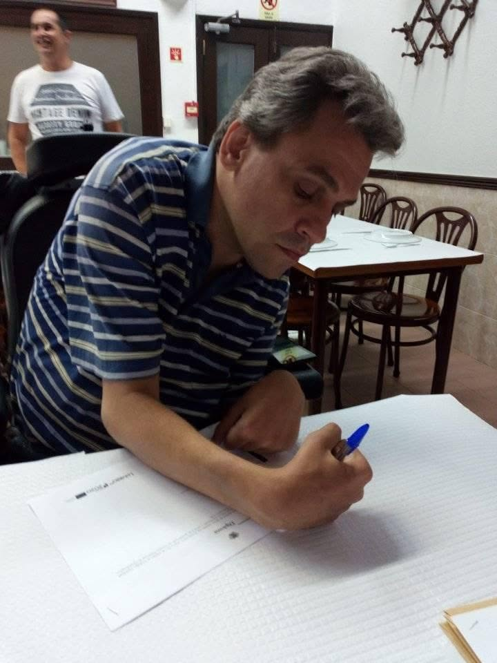
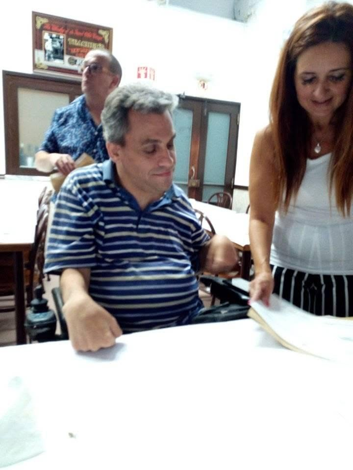
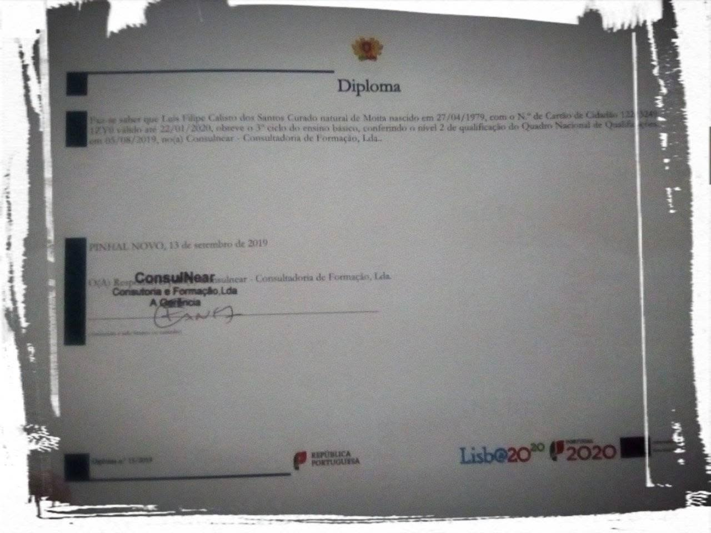
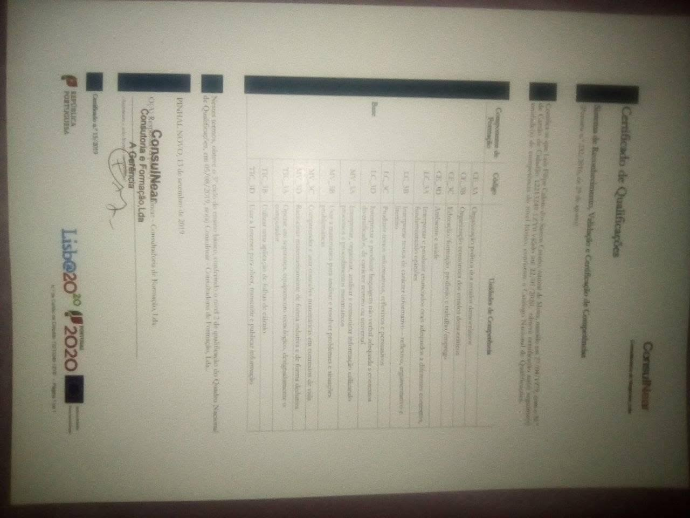
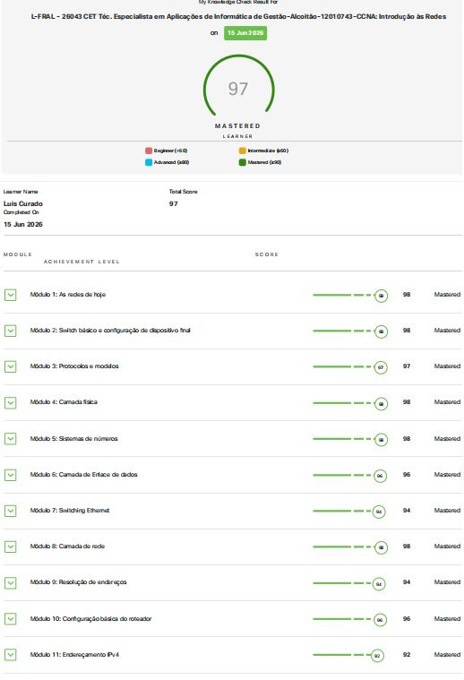
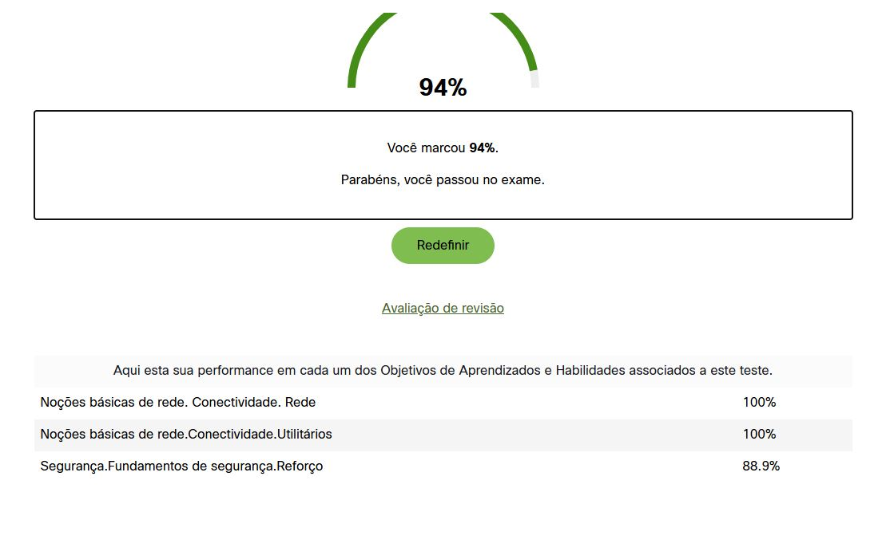
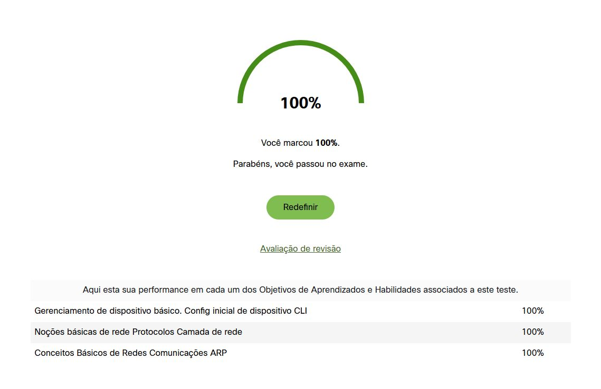
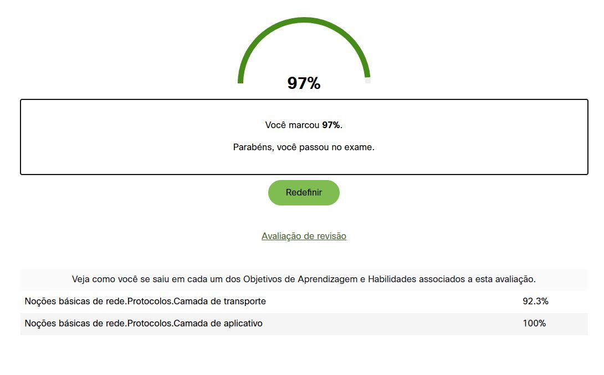
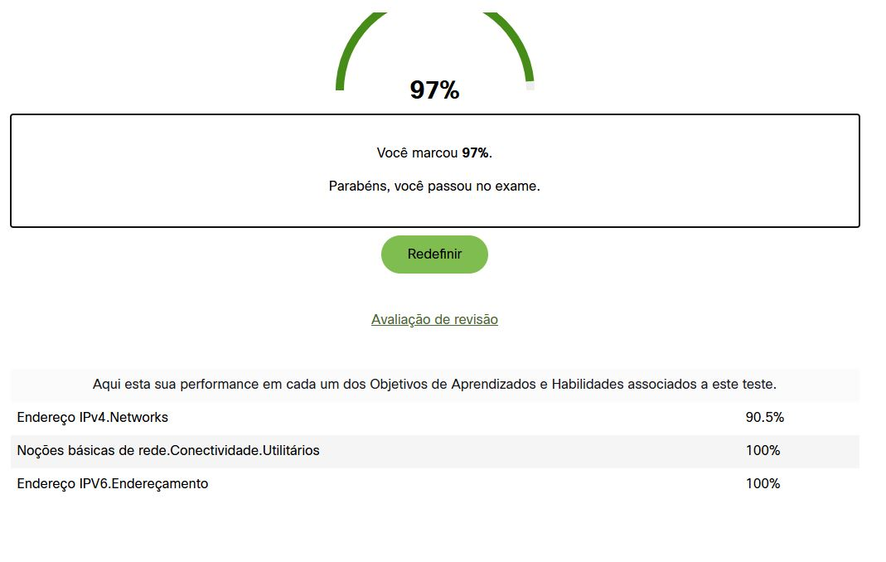

O percurso Profissional
Abandonou a escola no 7º ano e começou a trabalhar cedo: carpintaria, fábrica de candeeiros, e como afagador de pedra em Lisboa (onde começou a ganhar bem). Trabalhou como ajudante de eletricista, uma profissão de que gostava muito e que lhe dava estabilidade financeira. Conseguiu o trabalho que sonhava na Nissan Entreposto, como ajudante de pintor automóvel, onde se estava a preparar para ser pintor efetivo.
Conclusão do 9º Ano
Conclusão do 9º ano, RVCC no centro qualifica do Pinhal Novo, e festejado com um jantar, com colegas, na Casa das Bifanas Palmela.




12º Ano - Técnico de Multimédia nível 4
Desenvolvimento de competências em design, edição de imagem (Photoshop), vídeo (Premiere) , e som com o (Audacity) e estruturação web (html, css, php, c, c++,) modelação 3D (Blender), no IEFP Setúbal. Uma viragem importante para o mundo digital.
Fotografias do Curso
.jpg)
.jpg)
.jpg)
.png)
.png)
.png)
.png)
.jpg)
Diplomas e Certificados
.jpg)
.jpg)
.jpg)
Técnico Especialista em Aplicações de Informática de Gestão
Especialização avançada focada em sistemas de informação, redes e gestão tecnológica, incluindo a prestigiada certificação da Cisco Academy.
Certificação Cisco

Fotografias e Momentos



